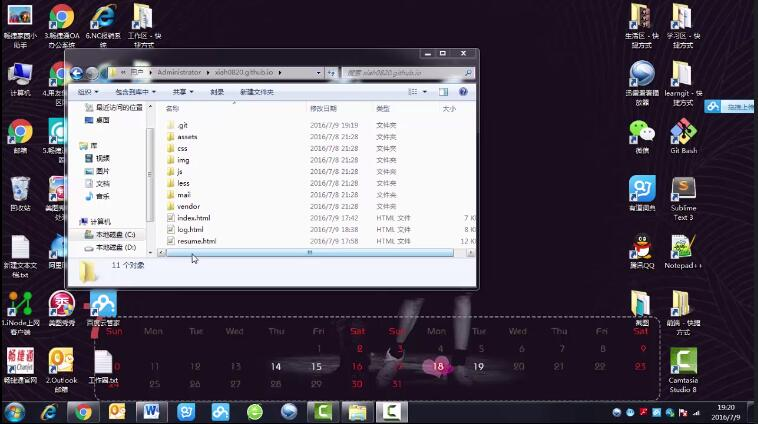

基础准备
1、首先要对html、css、JavaScript、jQuery等基础知识有一定的了解；
2、通过学习老师推荐的bootstrap教学视频，入门bootstrap；
Bootstrap，来自 Twitter，是目前很受欢迎的前端框架。Bootstrap 是基于 HTML、CSS、JAVASCRIPT 的，它简洁灵活，使得 Web 开发更加快捷。Bootstrap项目主页本身就是一个很清楚的使用说明文档。
3、在自己的电脑端完成对博客和个人简历的制作；
搭建网站
4、注册一个自己的github账号，并配置github；
5、建立一个以XXX.github.io命名的库，其中，XXX是github账号名；
6、在本地建立一个与库同名的文件夹，把源代码放入这个文件夹中；
7、打开git bash.exe，并把目录设置到该文件夹；
8、输入命令：【git remote add origin git@github.com:xiah0820/xiah0820.github.io.git】。添加后，远程库的名字就是origin；
9、依次输入【git add .】和【git commit -m "this is the first attempt to build a blog."】；
10、输入【git push -u origin master】，把本地库的内容推送到远程；
视频
视频链接 1 优酷链接
视频链接 2 百度云链接
PS：因为用优酷播放要看广告，所以我又传了一份百度云。如果百度云方便的话，可以用百度云看，就不需要看广告了。^ ^